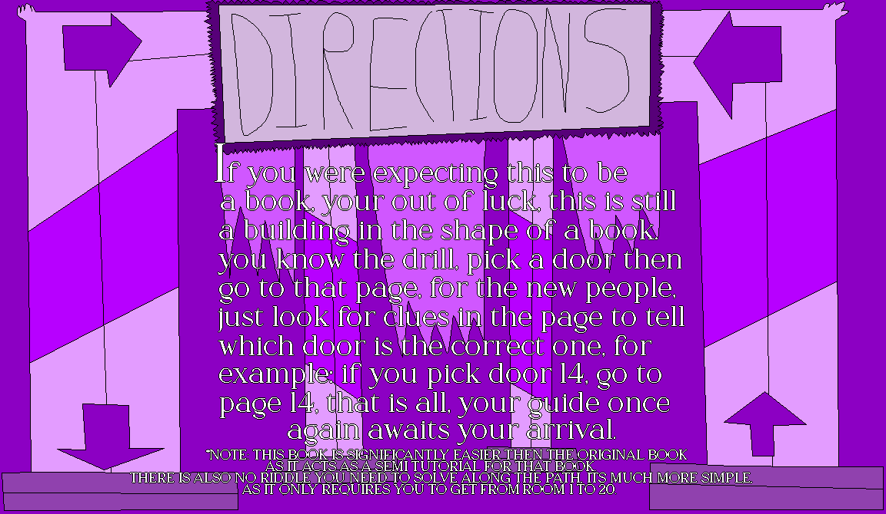

If you were expecitng this to be a book, your out of luck, this is still a building in the shape of a book.
you know the drill, pick a door then go to that page, for the new people, just look for clues in the page to tell which door is the correct one, for example: if you pick door 14, go to page 14, that is all, your guide once again awaits your arrival.